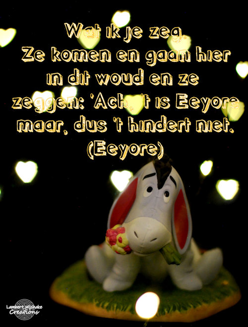

Dit ben ik. (niet dat het wat uitmaakt)
Iedereen die Winney de poeh heeft gezien of gelezen zou mij ook wel kennen. sorry daarvoor. Ik ben een ezel die heel deprimerend is. Afhangend van de plek waar mijn huisje instort heb ik een verschillende kleur vacht. In europa is dit blauw en in Amerika is dit grijs. Maar niet dat het uitmaakt. De strik heeft wel dezelfde kleur. Ook ben ik mijn staart constant kwijt. Vaak als hij weg is en ik vind hem niet, weet ik zeker dat hij gestolen is. Als ik wel mijn staart terug heb, dan zal Janneman Robinson hem met een spijker in mijn achterste slaan